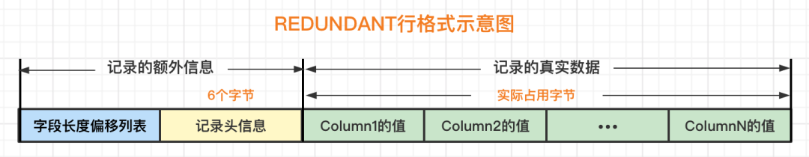

Ch04-MySQL 之 存储结构
October 31, 2021
Page #
索引页
| 组成 | 说明 |
|---|---|
| File Header | 表示页的一些通用信息，占固定的 38 字节。 |
| Page Header | 表示数据页专有的一些信息，占固定的 56 个字节。 |
| Infimum + Supremum | 两个虚拟的伪记录，分别表示页中的最小和最大记录，占固定的 26 个字节。 |
| User Records | 真实存储我们插入的记录的部分，大小不固定。 |
| Free Space | 页中尚未使用的部分，大小不确定。 |
| Page Directory | 页中的某些记录相对位置，也就是各个槽在页面中的地址偏移量，大小不固定，插入的记录越多，这个部分占用的空间越多。 |
| File Trailer | 用于检验页是否完整的部分，占用固定的 8 个字节。 |
Row #
| 格式 | 说明 |
|---|---|
| compact | |
| redundant |  |
| dynamic | 与 compact 行格式挺像，但它不会在记录的真实数据处存储字段真实数据的前 768 个字节，而是把所有的字节都存储到其他页面中，只在记录的真实数据处存储其他页面的地址 |
| compressed | 会采用压缩算法对页面进行压缩，以节省空间 |